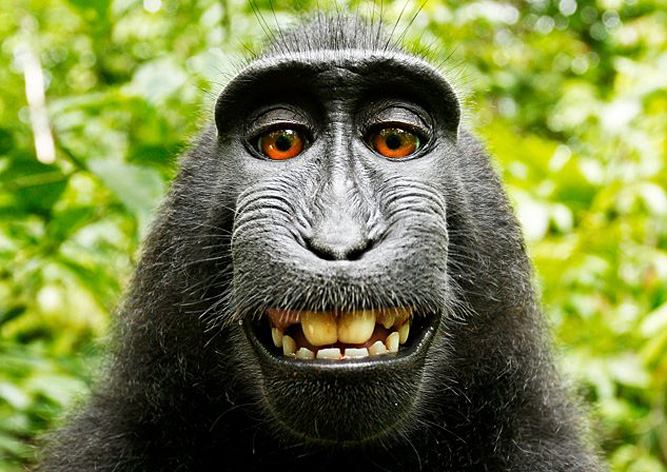

Обезья́ны — четверорукие млекопитающие, наиболее близкие к человеку по строению тела и происхождению, в широком смысле — все представители отряда приматов (Primates). Слово «обезьяна» появилось в древнерусском языке как заимствование из перс. بوزینه — «бузинэ» (возможно также влияние ст.слав. о҄пица) и стало широко известно после издания «Хожения за три моря» Афанасия Никитина. В словаре Д. Н. Ушакова уточняется, что abü zinä в арабском означает «отец блуда». У большинства обезьян белки глаз обычно чёрные, как и зрачки (у людей — белые, что контрастирует со зрачками). Обезьяны отличаются от полуобезьян дневным образом жизни, сложным поведением, всеядностью с уклоном в растительноядность. С этим связаны их многие морфологические особенности, например, сложно устроенный мозг.
Обезьяны или антропоиды или высшие приматы — в более узком смысле — те виды приматов, которые относились к устаревшему ныне подотряду обезьян (Simiæ) или антропоидов (Anthropoidea), противопоставлявшемуся подотряду полуобезьян (Prosimiae). Подотряд обезьян делился на две группы: широконосых (Platyrrhini) — обезьяны Центральной и Южной Америки, узконосых (Catarrhini) — обезьяны Старого Света. В новой систематике настоящих обезьян выделяют в инфраотряд обезьянообразные и объединяют с долгопятами в подотряд сухоносых приматов (Haplorhini), а полуобезьян (без долгопятов) — в подотряд мокроносых приматов (Strepsirrhini).
| Название: | Обезьяны |
| Статус названия: | Устаревшее таксономическое |
| Научное название: | Anthropoidea или Simiae |
| Родительский таксон: | Отряд Приматы (Primates) |
| Представители: |
|